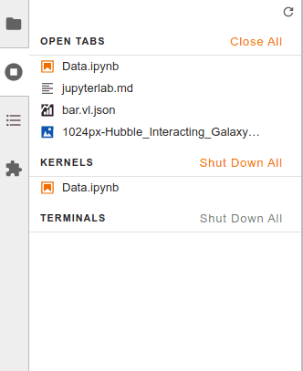
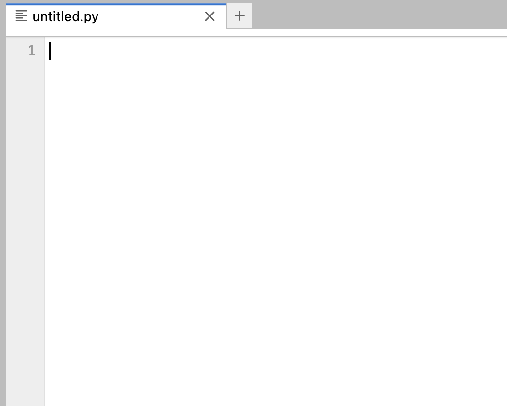

üìù How to Use JupyterHub
Contents
üìù How to Use JupyterHub#
There are a variety of ways that you can use, program, and interact with Python. All have their advantages and disadvantages.
For this course we have set up a JupyterHub. This will be the supported computing platform for this course.
Drexel JupyterHub#
Connecting#
The JupyterHub can be accessed at https://jupyterhub.coe.drexel.edu
Network Access and VPN#
To gain access you must be logged into the campus network Dragonfly3 or be connected to using the Drexel Virtual Private Network.
Tip
If you do not have the VPN installed please follow the instructions atLogging In#
When navigating to the website you will be presented with a login screen.
Type your Drexel University email address (example abc123@drexel.edu) and Password
Throughout the course we will provide you with other credentials. These are considered public credentials and should not be used for storing your personal work (just team projects).
Computing Requirements for ENGR 131#
When you login to the JupyterHub all of the computation is conducted on a remote server. You can access the JupyterHub on any laptop with a web browser (Windows, Mac, Linux, Chromebook). You can even access the JupyterHub from a tablet or phone.
If you have concerns about access to computing resources please contact Prof. Capps, or Prof. Agar
JupyterLab Interface#

JupyterLab provides flexible building blocks for interactive, exploratory computing.
Right Sidebar#

The property inspector (active in notebooks)
The debugger
Main Work Area#
The main work area in JupyterLab enables you to arrange documents (notebooks, text files, etc.) and other activities (terminals, code consoles, etc.) into panels of tabs that can be resized or subdivided.
Drag a tab to the center of a tab panel to move the tab to the panel. Subdivide a tab panel by dragging a tab to the left, right, top, or bottom of the panel:
Navigating Tabs#
The Tabs panel in the left sidebar lists the open documents or activities in the main work area:

The same information is also available in the Tabs menu:

Context Menus#

Context of files can be accessed using a right-click
Supported Tasks and File Types#
JupyerLab supports most standard file types. Most files can be opened directly within the browser.
You will use many of the functionality inside JupyterLab
Terminal#
You can access a terminal by clicking:

The terminal provides a command-line prompt. This allows you to provide text-based instructions to the computer.
Nearly every operation on a computer can be done using the command line
We will primarily use the terminal to interact with files and folders and run scripts.
Jupyter Notebook#

Jupyter Notebooks is an open-source interactive programming environments
They work with more than 40 languages including Python
Your code can produce rich, interactive output: HTML, images, videos, LaTeX, and custom MIME types
Notebooks can be shared with others using email, Dropbox, GitHub and the Jupyter Notebook Viewer
Python Editor#

You can use JupyterLab as a interactive development environment to write Python files
This allows you to make scripts and packages